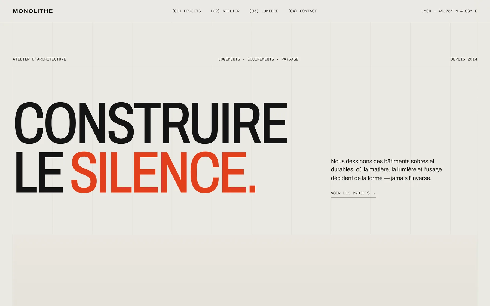
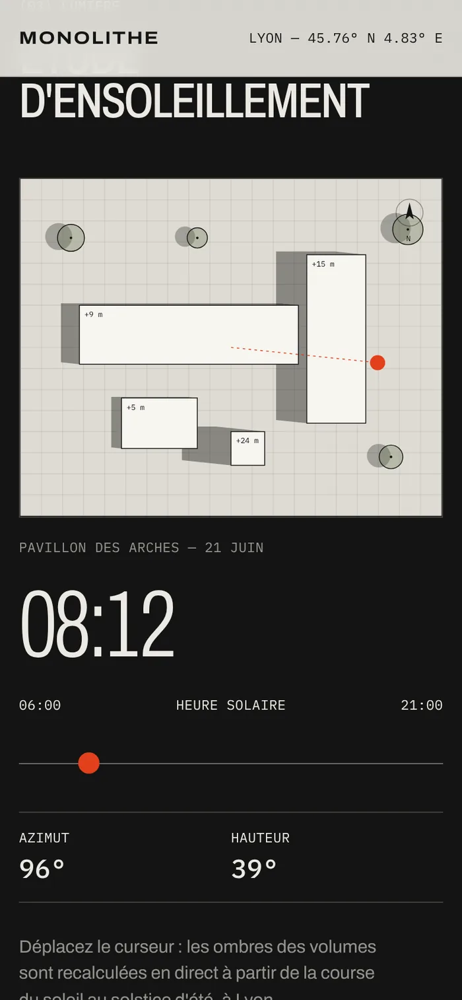
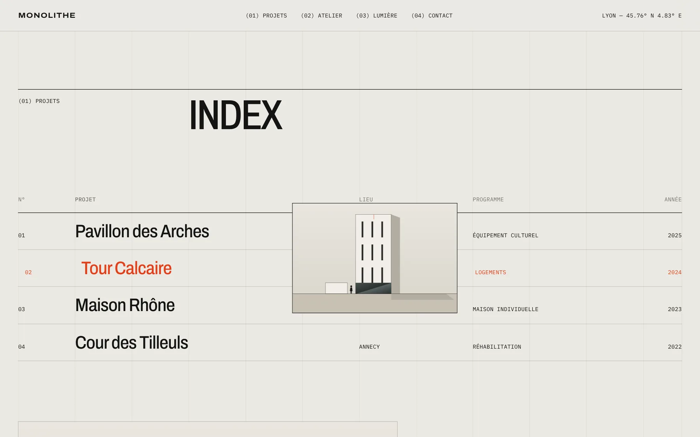
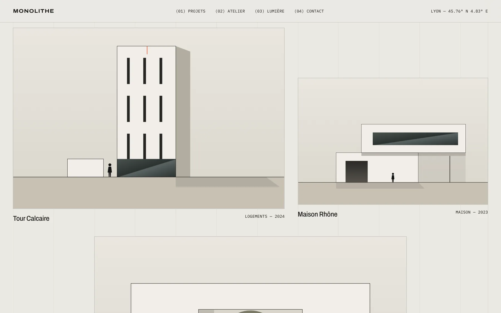
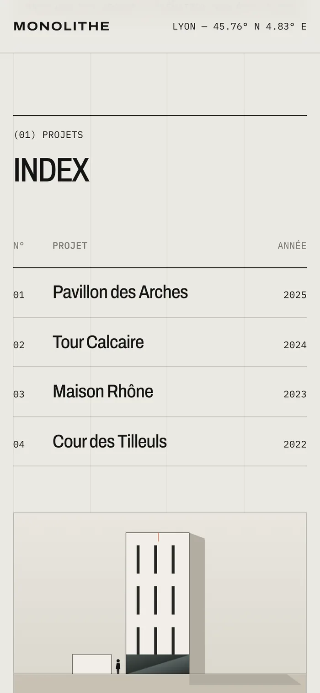

Concept personnel — 2026
Le site d'un atelier d'architecture, où la rigueur de la grille suisse rencontre une vraie démonstration technique : une étude d'ensoleillement calculée en direct.
- Type
- Atelier d'architecture
- Année
- 2026
- Rôle
- Direction artistique, UI, développement
- Outils
- SVG, JavaScript, astronomie solaire
- Statut
- Concept — atelier fictif
- Prototype
- Voir en ligne ↗


✦Concept personnel : Monolithe et ses réalisations sont fictifs. Les calculs d'ensoleillement, eux, sont réels (latitude de Lyon, solstice d'été).
Dire moins, montrer mieux.
Les architectes parlent de matière, de lumière et d'usage. Le site devait faire pareil : une grille de douze colonnes laissée visible, une typographie condensée, des annotations en mono et un seul signal rouge.
Les projets sont illustrés par des élévations dessinées en SVG — des dessins d'architecte, pas des photos retouchées.
Calcaire, béton & signal.
Des gris chauds de matériaux bruts, une encre presque noire et un rouge réservé aux éléments importants. Archivo, dont on fait varier la largeur, apporte la tension des titres ; IBM Plex Mono la précision des cotes.
Construire le silence.
Archivo
Éch. 1:200 — 45.76° N
IBM Plex Mono
Une étude d'ensoleillement.
La pièce maîtresse : un plan masse où les ombres de chaque volume sont recalculées en direct. Position du soleil au solstice d'été à la latitude de Lyon, azimut, hauteur, projection selon la hauteur de chaque bâtiment.
Un curseur fait défiler la journée de 6 h à 21 h ; sans intervention, l'animation tourne seule. Exactement l'outil qu'un architecte montrerait en rendez-vous client.


Index — aperçu au survol

Élévations en SVG


La rigueur, partout.
Grille visible
Les douze colonnes restent affichées en filigrane : la structure devient un élément graphique.
Index & aperçu
Une liste de projets façon catalogue ; au survol, l'élévation du bâtiment suit le curseur.
Élévations SVG
Quatre bâtiments dessinés en code, avec ombres, vitrages et silhouettes à l'échelle.
Calcul solaire
Formules d'astronomie réelles et enveloppe convexe pour projeter l'ombre de chaque volume.
Dubaï Center

✦ Un projet en tête ?